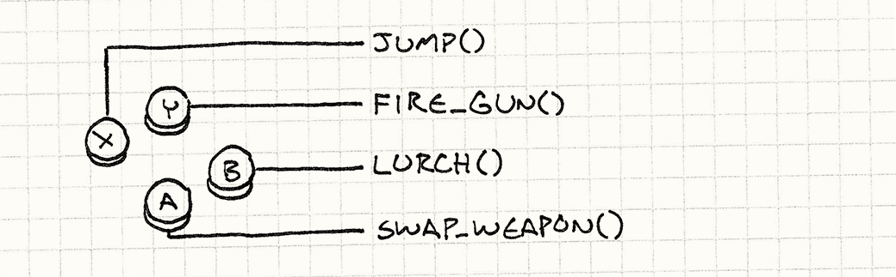
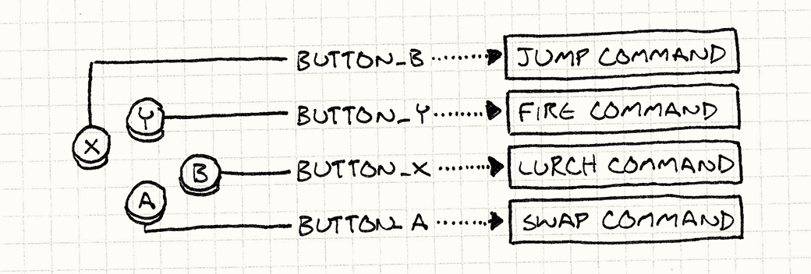
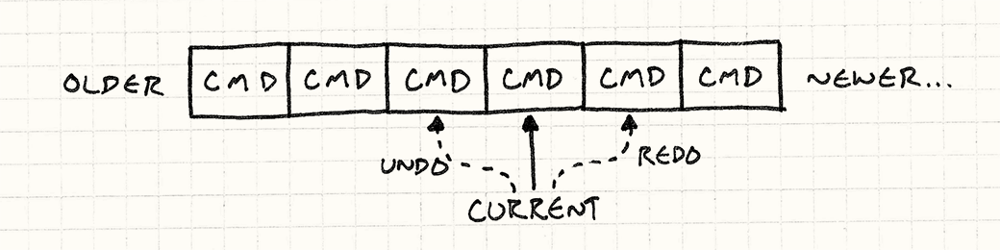

Command
Game Programming PatternsDesign Patterns Revisited
Command is one of my favorite patterns. Most large programs I write, games or otherwise, end up using it somewhere. When I’ve used it in the right place, it’s neatly untangled some really gnarly code. For such a swell pattern, the Gang of Four has a predictably abstruse description:
Encapsulate a request as an object, thereby letting users parameterize clients with different requests, queue or log requests, and support undoable operations.
I think we can all agree that that’s a terrible sentence. First of all, it mangles whatever metaphor it’s trying to establish. Outside of the weird world of software where words can mean anything, a “client” is a person — someone you do business with. Last I checked, people can’t be “parameterized”.
Then, the rest of that sentence is just a list of stuff you could maybe possibly use the pattern for. Not very illuminating unless your use case happens to be in that list. My pithy tagline the Command pattern is:
A command is a reified method call.
Of course, “pithy” often means “impenetrably terse”, so this may not be much of an improvement. Let me unpack that a bit. “Reify”, in case you’ve never heard it, means “make real”. Another term for reifying is making something “first class”.
Both terms mean taking some concept and turning it into a piece of data — an object — that you can stick in a variable, pass to a function, etc. So by saying the Command pattern is a “reified method call”, what I mean is that it’s a method call wrapped in an object.
That sounds a lot like a “callback”, “first class function”, “function pointer”, “closure”, or “partially applied function”, depending on which language you’re coming from, and indeed those are all in the same ballpark. The Gang of Four later says:
Commands are an object-oriented replacement for callbacks.
That would be a better slugline for the pattern than the one they chose.
But all of this is abstract and nebulous. I like to start chapters with something concrete, and I blew that. To make up for it, from here on out it’s all examples where commands are a brilliant fit.
Configuring Input
Somewhere in every game is a chunk of code that reads in raw user input — button presses, keyboard events, mouse clicks, whatever. It takes each input and translates it to a meaningful action in the game:

A dead simple implementation looks like:
void InputHandler::handleInput() { if (isPressed(BUTTON_X)) jump(); else if (isPressed(BUTTON_Y)) fireGun(); else if (isPressed(BUTTON_A)) swapWeapon(); else if (isPressed(BUTTON_B)) lurchIneffectively(); }
This function typically gets called once per frame by the Game Loop, and I’m sure you can figure out what it does. This code works if we’re willing to hard-wire user inputs to game actions, but many games let the user configure how their buttons are mapped.
To support that, we need to turn those direct calls to jump() and fireGun()
into something that we can swap out. “Swapping out” sounds a lot like assigning
a variable, so we need an object that we can use to represent a game action.
Enter: the Command pattern.
We define a base class that represents a triggerable game command:
class Command { public: virtual ~Command() {} virtual void execute() = 0; };
Then we create subclasses for each of the different game actions:
class JumpCommand : public Command { public: virtual void execute() { jump(); } }; class FireCommand : public Command { public: virtual void execute() { fireGun(); } }; // You get the idea...
In our input handler, we store a pointer to a command for each button:
class InputHandler { public: void handleInput(); // Methods to bind commands... private: Command* buttonX_; Command* buttonY_; Command* buttonA_; Command* buttonB_; };
Now the input handling just delegates to those:
void InputHandler::handleInput() { if (isPressed(BUTTON_X)) buttonX_->execute(); else if (isPressed(BUTTON_Y)) buttonY_->execute(); else if (isPressed(BUTTON_A)) buttonA_->execute(); else if (isPressed(BUTTON_B)) buttonB_->execute(); }
Where each input used to directly call a function, now there’s a layer of indirection:

This is the Command pattern in a nutshell. If you can see the merit of it already, consider the rest of this chapter bonus.
Directions for Actors
The command classes we just defined work for the previous example, but they’re
pretty limited. The problem is that they assume there are these top-level
jump(), fireGun(), etc. functions that implicitly know how to find the
player’s avatar and make him dance like the puppet he is.
That assumed coupling limits the usefulness of those commands. The only thing
the JumpCommand can make jump is the player. Let’s loosen that restriction.
Instead of calling functions that find the commanded object themselves, we’ll
pass in the object that we want to order around:
class Command { public: virtual ~Command() {} virtual void execute(GameActor& actor) = 0; };
Here, GameActor is our “game object” class that represents a character in the
game world. We pass it in to execute() so that the derived command can invoke
methods on an actor of our choice, like so:
class JumpCommand : public Command { public: virtual void execute(GameActor& actor) { actor.jump(); } };
Now we can use this one class to make any character in the game hop around.
We’re just missing a piece between the input handler and the command that takes
the command and invokes it on the right object. First, we change handleInput()
so that it returns commands:
Command* InputHandler::handleInput() { if (isPressed(BUTTON_X)) return buttonX_; if (isPressed(BUTTON_Y)) return buttonY_; if (isPressed(BUTTON_A)) return buttonA_; if (isPressed(BUTTON_B)) return buttonB_; // Nothing pressed, so do nothing. return NULL; }
It can’t execute the command immediately since it doesn’t know what actor to pass in. Here’s where we take advantage of the fact that the command is a reified call: we can delay when the call is executed.
Then we need some code that takes that command and runs it on the actor representing the player. Something like:
Command* command = inputHandler.handleInput(); if (command) { command->execute(actor); }
Assuming actor is a reference to the player’s character, this correctly drives
him based on the user’s input, so we’re back to the same behavior we had in the
first example. But adding a layer of indirection between the command and the
actor that performs it has given us a neat little ability: we can let the
player control any actor in the game now by just changing the actor we execute
the commands on.
In practice, that’s not a common feature, but there is a similar use case that
does pop up frequently. So far, we’ve only considered the player-driven
character, but what about all of the other actors in the world? Those are driven
by the game’s AI. We can use this same command pattern as the interface between
the AI engine and the actors: the AI code just emits Command objects.
The decoupling here between the AI that selects commands, and the actor code that performs them gives us a lot of flexibility. We can use different AI modules for different actors. Or we can mix and match AI for different kinds of behavior. Want a more aggressive opponent? Just plug-in a more aggressive AI to generate commands for it. In fact, we can even bolt AI onto the player’s character, which can be useful for things like demo mode where the game needs to run on auto-pilot.
By making the commands that control an actor first class objects, we’ve removed the tight coupling of a direct method call. Instead, think of it as a queue or stream of commands:

Some code (the input handler or AI) produces commands and places them in the stream. Other code (the dispatcher or actor itself) consumes commands and invokes them. By sticking that queue in the middle, we’ve decoupled the producer on one end from the consumer on the other.
Undo and Redo
The last example is the most well-known use of this pattern. If a command object can do things, it’s a small step for it to be able to undo them. Undo is used in some strategy games where you can roll back moves that you didn’t like. It’s de rigueur in tools that people use to create games. The surest way to make your game designers hate you is giving them a level editor that can’t undo their fat-fingered mistakes.
Without the Command pattern, implementing undo is surprisingly hard. With it, it’s a piece of cake. Let’s say we’re making a single player turn-based game and we want to let users undo moves so they can focus more on strategy and less on guesswork.
We’re conveniently already using commands to abstract input handling, so every move the player makes is already encapsulated in them. For example, moving a unit may look like:
class MoveUnitCommand : public Command { public: MoveUnitCommand(Unit* unit, int x, int y) : unit_(unit), x_(x), y_(y) {} virtual void execute() { unit_->moveTo(x_, y_); } private: Unit* unit_; int x_, y_; };
Note this is a little different from our previous commands. In the last example, we wanted to abstract the command from the actor that it modified. In this case, we specifically want to bind it to the unit being moved. An instance of this command isn’t a general “move something” operation that you could use in a bunch of contexts, it’s a specific concrete move in the game’s sequence of turns.
This highlights a variation in how the Command pattern gets implemented. In some
cases, like our first couple of examples, a command is a reusable object that
represents a thing that can be done. Our earlier input handler held on to a
single command object and called its execute() method anytime the right button
was pressed.
Here, the commands are more specific. They represent a thing that can be done at a specific point in time. This means that the input handling code will be creating an instance of this every time the player chooses a move. Something like:
Command* handleInput() { // Get the selected unit... Unit* unit = getSelectedUnit(); if (isPressed(BUTTON_UP)) { // Move the unit up one. int destY = unit->y() - 1; return new MoveUnitCommand(unit, unit->x(), destY); } if (isPressed(BUTTON_DOWN)) { // Move the unit down one. int destY = unit->y() + 1; return new MoveUnitCommand(unit, unit->x(), destY); } // Other moves... return NULL; }
The fact that commands are one-use-only will come to our advantage in a second. To make commands undoable, we define another operation each command class needs to implement:
class Command { public: virtual ~Command() {} virtual void execute() = 0; virtual void undo() = 0; };
An undo() method reverses the game state changed by the corresponding
execute() method. Here’s our previous move command with undo support:
class MoveUnitCommand : public Command { public: MoveUnitCommand(Unit* unit, int x, int y) : unit_(unit), xBefore_(0), yBefore_(0), x_(x), y_(y) {} virtual void execute() { // Remember the unit's position before the move // so we can restore it. xBefore_ = unit_->x(); yBefore_ = unit_->y(); unit_->moveTo(x_, y_); } virtual void undo() { unit_->moveTo(xBefore_, yBefore_); } private: Unit* unit_; int xBefore_, yBefore_; int x_, y_; };
Note that we added some more state to the class.
When a unit moves, it forgets where it used to be. If we want to be able to undo
that move, we have to remember the unit’s previous position ourselves, which is
what xBefore_ and yBefore_ in the command are.
To let the player undo a move, we keep around the last command they executed.
When they bang on Control-Z, we call that command’s undo() method. (If they’ve
already undone, then it becomes “redo” and we execute the command again.)
Supporting multiple levels of undo isn’t much harder. Instead of remembering the last command, we keep a list of commands and a reference to the “current” one. When the player executes a command, we append it to the list and point “current” at it.

When the player chooses “Undo”, we undo the current command and move the current pointer back. When they redo, we advance the pointer and then execute that command. If they choose a new command after undoing some, everything in the list after the current command is discarded.
The first time I implemented this in a level editor, I felt like a wizard. I was astonished at how straightforward it was and how well it worked. It takes discipline to make sure every data modification goes through a command, but once you do that, the rest is easy.
Classy and Dysfunctional?
Earlier, I said commands are similar to first class functions or closures, but every example I showed here used class definitions. If you’re familiar with functional programming, you’re probably wondering where the functions are.
I wrote the examples this way because C++ has pretty limited support for first- class functions. Function pointers are stateless, functors are weird and still require defining a class, and the lambdas in C++11 are tricky to work with because of manual memory management.
That’s not to say you shouldn’t use functions for the Command pattern in other languages. If you have the luxury of a language with real closures, by all means use them! In some ways, the Command pattern is a way of emulating closures in languages that don’t have them.
For example, if we were building a game in JavaScript, we could create a move unit command just like this:
function makeMoveUnitCommand(unit, x, y) { // This function here is the command object: return function() { unit.moveTo(x, y); } }
We could add support for undo as well using a pair of closures:
function makeMoveUnitCommand(unit, x, y) { var xBefore, yBefore; return { execute: function() { xBefore = unit.x(); yBefore = unit.y(); unit.moveTo(x, y); }, undo: function() { unit.moveTo(xBefore, yBefore); } }; }
If you’re comfortable with a functional style, this way of doing things is natural. If you aren’t, I hope this chapter helped you along the way a bit. For me, the usefulness of the Command pattern really shows how effective the functional paradigm is for many problems.
See Also
-
You may end up with a lot of different command classes. In order to make it easier to implement those, it’s often helpful to define a concrete base class with a bunch of convenient high-level methods that the derived commands can compose to define their behavior. That turns the command’s main
executemethod into a Subclass Sandbox. -
In our examples, we explicitly chose which actor would handle a command. In some cases, especially where your object model is hierarchical, it may not be so cut-and-dried. An object may respond to a command, or it may decide to pawn it off on some subordinate object. If you do that, you’ve got yourself a Chain of Responsibility.
-
Some commands are stateless chunks of pure behavior like the
JumpCommandin the first example. In cases like that, having more than one instance of that class wastes memory, since all instances are equivalent. The Flyweight pattern addresses that.